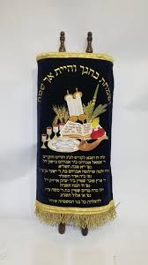
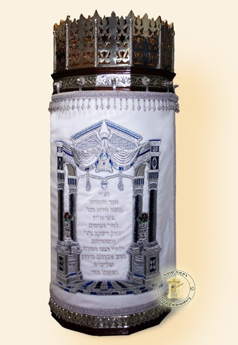

הסופר שלנו
הרב אברהם יעקב שלומון
...
הנציחו את יקיריכם בדרך שתחיה לעד — ספר תורה הנכתב בידי סופר סת"ם מהמעולים, שיקרא בציבור מדי שבת וחג, לעד ולנצח.
"וְעַתָּה כִּתְבוּ לָכֶם אֶת הַשִּׁירָה הַזֹּאת"
דברים לא, יט
ניתן לכתוב בכתב אשכנזי (בית יוסף) או ספרדי (וולש / מזרחי), בהתאם למסורת המשפחה ולמנהג בית הכנסת.

נכתב בכתב בית יוסף על קלף מובחר, עם אדים ומנחה מדויקים לפי מנהג האשכנזים. מתאים לבתי כנסת אשכנזים בכל העולם.

נכתב בכתב וולש על קלף דק ועדין, עם קישוטי הכתב האופייניים למסורת הספרדים ועדות המזרח.
אחת מ-613 המצוות — זכות שנשמת הנפטר נהנית ממנה בכל קריאה ציבורית, לנצח.
כתיבת ספר תורה היא מצווה עצמאית המוטלת על כל יהודי. תרומה לכתיבה נחשבת כאילו קיים את המצווה בעצמו.
בכל פעם שהציבור קורא בספר — בשבת, בחג, בשמחה — הזכות עולה לנשמת הנפטר. זה לא נגמר.
מאות משפחות שכולות בחרו בספר תורה כדרך ההנצחה הנעלה ביותר לבניהן שנפלו בהגנת הארץ.
הספר ניתן לבית הכנסת שתבחרו ומשמש דורות. שמו של הנפטר מונצח בהקדשה שתוצמד לספר לעולמים.
...
נדבר על הסיבה לכתיבה, על בית הכנסת המיועד, לוח הזמנים ותקציב — בלי התחייבות, בלי לחץ.
נתאים לכם סופר סת"ם מוסמך — אשכנזי או ספרדי — בהתאם למסורת המשפחה ובית הכנסת.
הכתיבה נמשכת בין חצי שנה לשנה. תקבלו עדכונים שוטפים ואפשרות לבקר את הסופר.
כל ספר עובר בדיקה קפדנית על ידי מגיה מוסמך — לוודא כשרות מלאה של כל אות.
בחירת מעיל ספר תורה, כתר, וכל האביזרים הנלווים — לפי המסורת וטעם המשפחה.
בחירת בית כנסת לקבלת הספר — לפי מיקום, קהילה, וצרכים מיוחדים. במידת הצורך נמצא עבורכם בית כנסת שישמח לקבל ויקרא בספר שלכם כל שבוע
אירוע הכנסת ספר תורה עם כל המשפחה — שמחה, מוזיקה, ריקוד, ומצווה שלמה לדורות.
בנינו נפל בצוק איתן. לא ידענו כיצד להנציח אותו. הספר קורא בבית הכנסת שלנו כל שבת — ואנחנו מרגישים אותו איתנו.
קנינו חלק בספר תורה לזכר אבא. הסופר היה אדם נפלא, הסביר כל שלב. הרגשנו שזו מצווה שבאה מהלב.
לרגל חתונתנו רצינו לתת מתנה שתישאר לנצח. הספר הוכנס לבית הכנסת של שכונתנו — כל ילד שיגדל שם יקרא בו.
ייעוץ אישי, ללא עלות, ללא התחייבות
ספר שלם · חלק בספר · תשלומים נוחים · כל מסורת
💬 דברו איתנו בוואטסאפ